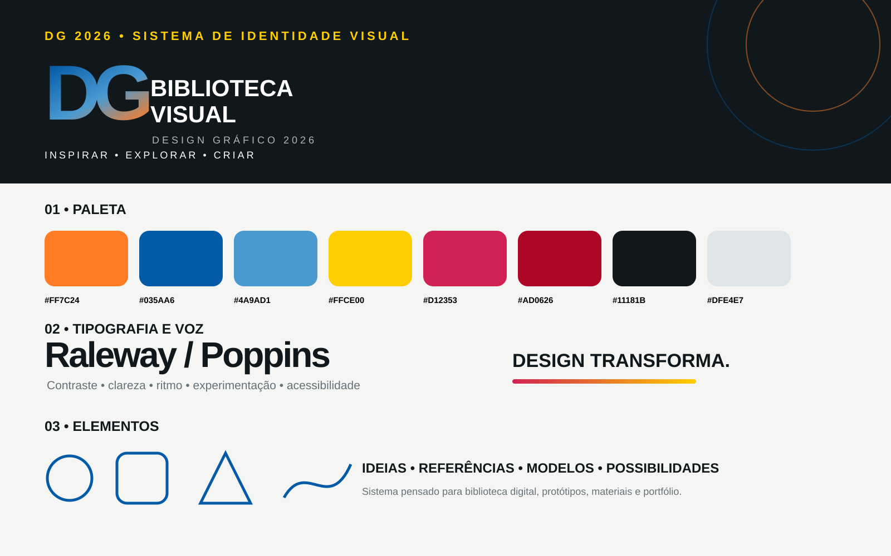

IDENTIDADE VISUAL • BASE DO SISTEMA
Uma linguagem para toda a biblioteca.
A identidade define a referência visual comum das páginas, protótipos e materiais. O objetivo é criar consistência sem limitar a experimentação.
CorContraste + energia
TipografiaRaleway + Rufina
FormaGrid + geometria
VozInspirar • Explorar • Criar
Biblioteca em evolução.
O acervo combina uma identidade-base e estudos específicos de cada linguagem. As referências funcionam como matéria-prima: observar → comparar → selecionar → adaptar → criar.